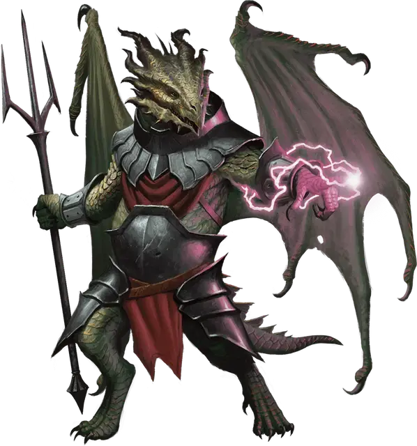

Драконид бозак
Bozak Draconian
Средний Монстр (Чародей), законно-злой

Класс Доспеха 15 (природный доспех)
Хиты 40 (9к8)
Скорость 30 футов
| мод | спас | ||
|---|---|---|---|
| СИЛ | 14 | +2 | +2 |
| ЛОВ | 10 | +0 | +0 |
| ТЕЛ | 11 | +0 | +0 |
| мод | спас | ||
|---|---|---|---|
| ИНТ | 11 | +0 | +2 |
| МДР | 10 | +0 | +2 |
| ХАР | 14 | +2 | +4 |
Чувства тёмное зрение 60 футов, пассивное Восприятие 10
Языки Общий, Драконий
Опасность 2 (450 опыта)
Бонус мастерства +2
Особенности
Предсмертная агония. Когда хиты драконида опускаются до 0, его чешуя и плоть сморщиваются, а его кости взрываются. Все существа в пределах 10 футов от него должны преуспеть в спасброске Ловкости Сл 10 или получить 9 (2к8) урона силовым полем.
Планирование. Когда драконид падает и дееспособен, он вычитает до 100 футов от высоты падения при расчете урона от падения, и может переместиться до 2 футов по горизонтали за каждый 1 фут спуска.
Действия
Мультиатака. Драконид совершает две атаки Трезубцем или две атаки Электрическим разрядом.
Трезубец. . Рукопашная или дальнобойная атака оружием: +4 к попаданию, досягаемость 5 фт. или дистанция 20/60 фт., одна цель. Попадание: 5 (1к6 + 2) колющего урона или 6 (1к8 + 2) колющего урона при использовании двумя руками при совершении рукопашной атаки.
Электрический разряд. . Дальнобойная атака заклинанием: +4 к попаданию, дистанция 60 фт., одна цель. Попадание: 10 (3к6) урона электричеством.
Использование заклинаний. Драконид накладывает одно из следующих заклинаний, не нуждаясь в материальных компонентах. Его базовой характеристикой является Харизма (Сл спасброска 12):
• 1/день каждое: зловонное облако [stinking cloud], невидимость [invisibility], паутина [web], увеличение/уменьшение [enlarge/reduce].
Описание
Дракониды бозаки были рождены из яиц бронзовых драконов и используют свою магию для поддержки союзников в битве. Их крылье не достаточны сильные, чтобы с их помощью летать, но бозаки могут использовать их для планирования во время падения. Когда бозаки умирают, их плоть сморщивается, а кости взрываются, разбрасывая во все стороны поток магических осколков.
Дракониды
Дракониды — двуногие чудовища, рождённые из яиц металлических драконов, которые были испорчены сочетанием порочной алхимии и нечистой магии Королевы драконов. Драконьи армии тщательно оберегают секрет создания драконидов, заставляя металлических драконов Кринна думать, что их яйца находятся в заложниках. По этой причине те не препятствуют завоеваниям Королевы драконов.